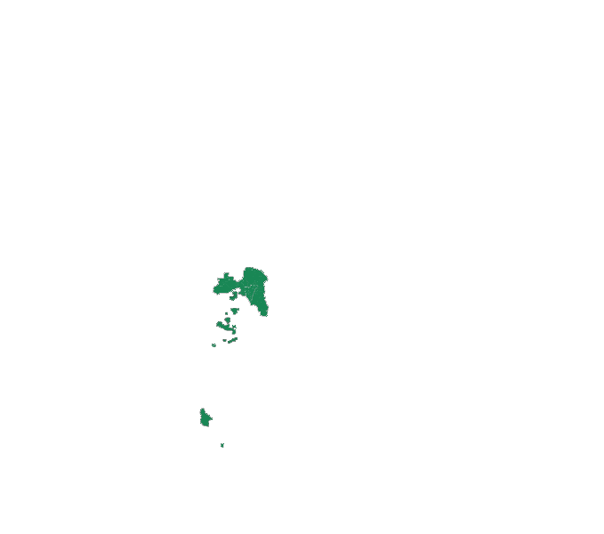
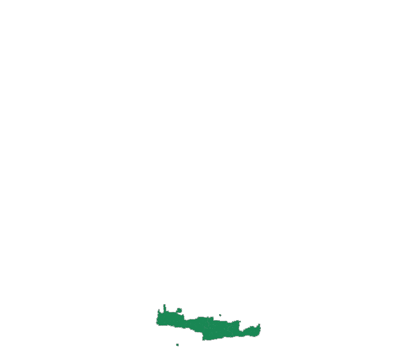
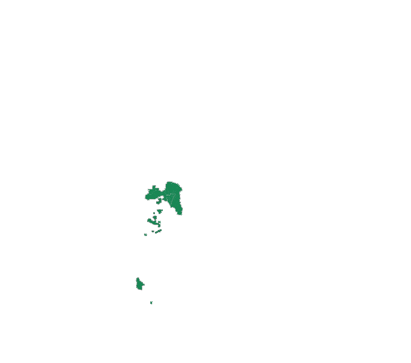
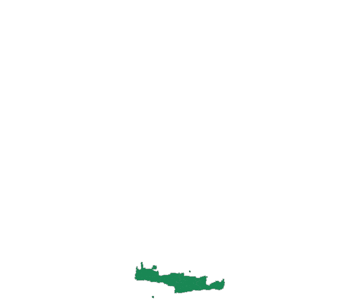

Крит

 





Η Αποκεντρωμένη Διοίκηση Κρήτης (ΑΔΚ)
Γενικές πληροφορίες:
- Χώρα: Ελλάδα
- Έκταση: 8.336 τ.χλμ.
- Πληθυσμός: 623.065 (2011)
- Έδρα: Ηράκλειο, Ελλάδα
- Δικαιοδοσία: Περιφέρεια Κρήτης
Θάλασσα διαυγής και κρυστάλλινη, βουνά κακοτράχαλα αλλά μεγαλοπρεπή, σπουδαία μουσεία και αρχαίοι οικισμοί, εντυπωσιακά σπήλαια και βάραθρα, γνωστά από τους προϊστορικούς χρόνους, τοιχογραφίες με έντονα χρώματα, ήπιο κλίμα, μαγευτικές ακτές με υπερσύγχρονα ξενοδοχεία, γοητευτική ενδοχώρα με γραφικά χωριά, παραδόσεις και ζεστή φιλοξενία, εξαιρετική τοπική κουζίνα για την οποία έρευνες έχουν αποδείξει πως αυξάνει θεαματικά το μέσο όρο ζωής (πρωταγωνιστικό ρόλο έχουν το κρέας, το παρθένο ελαιόλαδο, τα φρούτα, τα λαχανικά και τα όσπρια). Ένα νησί ξεχωριστό και συνάμα το μεγαλύτερο της Ελλάδας με έκταση 8.336 τ. χλμ. και πάνω από 1.000 χλμ. ακτών: αυτή είναι η Κρήτη.
Ένα νησί ξεχωριστό
Η θέση της Κρήτης, ανάμεσα στην Αφρική, την Ευρώπη και τη Μικρά Ασία, και το ήπιο κλίμα της την κατέστησαν κέντρο πολιτισμού ήδη από τα νεολιθικά χρόνια. Γύρω στο 6000 π.Χ., υπήρξαν στην Κρήτη προϊστορικοί οικισμοί, ενώ στα 2600 π.Χ. φτάνουν στο νησί άποικοι που γνώριζαν τον χαλκό. Μαζί τους ξεκινά η λαμπρή ιστορία του Μινωικού Πολιτισμού, ο οποίος γύρω στα 1950 π.Χ. βρίσκεται στην κορύφωσή του και τότε χτίζονται τα λαμπρά ανάκτορα στην Κνωσό, τη Φαιστό και τα Μάλια.
Κατά τη μυθολογία, σε μία σπηλιά της Κρήτης έκρυψε η Ρέα τον νεογέννητο Δία. Εκεί τον ανέθρεψαν οι νύμφες, ενώ οι δαίμονες Κουρήτες χτυπούσαν δυνατά τις ασπίδες τους, για να μην ακούει ο Κρόνος τα κλάματα του μωρού και το φάει. Στην Κρήτη, πάλι, ο Δίας, μεταμφιεσμένος σε ταύρο, έφερε την Ευρώπη, για να ζήσει μαζί της τον έρωτά του. Γιος τους ήταν ο Μίνωας, που βασίλευσε στην Κρήτη και την έκανε θαλασσοκράτειρα. Την εποχή εκείνη ακόμη και η Αττική πλήρωνε φόρο υποτέλειας στην Κρήτη, μέχρι που ο Αθηναίος πρίγκιπας Θησέας σκότωσε τον Μινώταυρο. Πίσω από τον μύθο κρύβεται ένα ισχυρό και πλούσιο βασίλειο και ο αρχαιότερος πολιτισμός της ευρωπαϊκής ηπείρου.
Στα 1450 π.Χ. και ξανά στα 1400 π.Χ. διαδοχικές καταστροφές, πιθανόν λόγω της έκρηξης του ηφαιστείου της Θήρας, φέρνουν την παρακμή. Ακολουθούν οι Δωριείς, που μεταναστεύουν στο νησί και αργότερα έρχονται οι Ρωμαίοι. Η Κρήτη γίνεται επαρχία του Βυζαντίου ενώ στη συνέχεια, για έναν ολόκληρο αιώνα (824-961 μ.Χ.), καταλαμβάνεται από τους Άραβες και γίνεται ορμητήριο πειρατών με κέντρο τους τον Χάνδακα, το σημερινό Ηράκλειο. Στη συνέχεια, η Κρήτη ξαναπερνά στο Βυζάντιο, μέχρι των ερχομό των Ενετών, οι οποίοι θα κρατήσουν το νησί για περίπου 5 αιώνες και θα αφήσουν βαθιά σφραγίδα στον πολιτισμό του. Το 1669, με την πτώση του Χάνδακα, ξεκινά η περίοδος της Τουρκοκρατίας, η οποία είναι γεμάτη αιματηρές επαναστάσεις. Στα τέλη του 19ου αι. η εξουσία των Τούρκων τελειώνει και δημιουργείται η Κρητική Πολιτεία, με ύπατο αρμοστή τον βασιλιά της Ελλάδας. Εν τέλει, το 1913 η Κρήτη, θα ενσωματωθεί επίσημα στην Ελλάδα.
Νομός ΧανίωνΟ νομός Χανίων, ο δυτικότερος του νησιού, χαρακτηρίζεται από τα εντυπωσιακά «Λευκά Όρη» και το τους που καταλαμβάνει το μεγαλύτερο τμήμα του νομού. Η περιπλάνηση στους λαβυρινθώδεις δρόμους της Παλιάς Πόλης των Χανίων με τις επιβλητικές βενετσιάνικες οικίες, τις κρήνες και τους περικαλλείς ναούς αποτελεί κυριολεκτικά μια απόδραση μέσα στο χρόνο. Νότια της πόλης βρίσκεται το Φραγκοκάστελλο, ένα βενετσιάνικο φρούριο με θέα το Λιβυκό πέλαγος. Ανακαλύψτε τους παραδοσιακούς οικισμούς της ευρύτερης περιοχής (με εξαιρετικές αγροτουριστικές υποδομές) όπως ο Βάμος και η Μηλιά, ακολουθώντας τα πανέμορφα μονοπάτια που συνδέουν τα χωριά της κρητικής υπαίθρου. Περιπλανηθείτε στα καταπράσινα λιβάδια και τους οπωρώνες της Αγιάς με τα ονομαστά μανταρίνια - μην παραλείψετε να εξερευνήσετε την ομώνυμη λίμνη και το σπάνιο οικοσύστημά της με ποδήλατο! Επισκεφθείτε τέλος τα οινοποιεία των Χανίων και δοκιμάστε τα κρασιά της κρητικής γης συνοδεία της γευστικής κρητικής κουζίνας.
Νομός ΡεθύμνηςΜεταξύ των Λευκών Ορέων και του Ψηλορείτη (Ίδη) βρίσκεται ο νομός Ρεθύμνου, συνώνυμος με απαράμιλλης ομορφιάς βραχώδη τοπία, υπέροχες ακτές, μελωδίες κρητικής λύρας, οφτό συνοδεία τσικουδιάς, θρυλικά σπήλαια, ιστορικά μοναστήρια, παραδοσιακά ορεινά χωριά και πολυτελή τουριστικά θέρετρα. Νιώστε την πεμπτουσία της Κρήτης του μύθου στην πιο ορεινή, απόμακρη και αυτάρκη περιοχή του νησιού…
Νομός ΗρακλέιουΟ μεγαλύτερος και ο πλέον πυκνοκατοικημένος νομός του νησιού περιβάλλεται από δύο οροσειρές, την Ίδη (Ψηλορείτης) στα δυτικά και τη Δίκτη (Λασιθιώτικα βουνά) στα ανατολικά. Στο Ηράκλειο βρίσκονται ορισμένοι από τους σημαντικότερους αρχαιολογικούς χώρους της Κρήτης, πανέμορφες παραλίες και μια γοητευτική ενδοχώρα με γραφικά χωριουδάκια, σπήλαια και φαράγγια, οροπέδια και κατάφυτες κοιλάδες γεμάτες ελαιώνες και αμπελώνες, επιβλητικές οροσειρές, καθώς και η πιο άρτια τουριστική υποδομή της Κρήτης. Ο απαράμιλλος συνδυασμός αστικού τοπίου και φυσικού πλούτου καθιστά το νομό Ηρακλείου μοναδικό προορισμό που πρέπει να εξερευνήσετε!
Νομός ΛασιθίουΣτο ανατολικό άκρο της Κρήτης, ο νομός Λασιθίου ξαφνιάζει με τις έντονες αντιθέσεις του. Πίσω από την εκτυφλωτική λάμψη των παγκοσμίως γνωστών παραθαλάσσιων τουριστικών θέρετρων, με τις υπερπολυτελείς ξενοδοχειακές μονάδες, βρίσκονται ανόθευτα από τον τουρισμό όμορφα ορεινά χωριά, ερημικές παραλίες, άγνωστοι αρχαιολογικοί χώροι και βυζαντινά ξωκλήσια, δημιουργώντας ένα πολύ γοητευτικό σκηνικό.
Εδώ κρύβονται μερικές από τις γοητευτικότερες όψεις της Μεγαλονήσου. Το «λιλιπούτειο» Άγιο Νικόλαο με τα κομψά νεοκλασικά να στεφανώνουν την πανέμορφη λίμνη του, τα κορυφαία resorts της Ελούντας με τη σφραγίδα της πολυτέλειας, το ξακουστό νησάκι Σπιναλόγκα με το τραγικό παρελθόν. Και το γοητευτικό παρόν. Ας ακολουθήσουμε μια διαδρομή που τα έχει όλα: διασκέδαση και νυχτερινή ζωή, πολυτελείς ανέσεις, γαλήνη και ιστορία.
Децентрализованная администрация Крита
Основная информация:- Страна: Греция
- Площадь: 8.336 кв.км.
- Население: 623.065 (2011)
- Штаб-квартира: Ираклион, Греция
- Юрисдикция: Регион Крит
Прозрачное и кристально чистое море, суровые, но величественные горы, великие музеи и древние поселения, впечатляющие пещеры и пропасти, известные с доисторических времен, яркие фрески, мягкий климат, очаровательные берега с ультрасовременным гостеприимством отелей, отличная местная кухня, которая, как показали исследования, значительно увеличивает среднюю продолжительность жизни (в основном мясо, оливковое масло первого отжима, фрукты, овощи и бобовые). Особый остров и в то же время самый большой в Греции площадью 8 336 кв. км. и более 1000 км. береговой линии: это Крит.
Особенный остров
Расположение Крита, между Африкой, Европой и Малой Азией, и его мягкий климат сделали его центром культуры ещё в эпоху неолита. Около 6000 г. до н.э. на Крите существовали доисторические поселения, в то время как в 2600 г. до н.э. поселенцы, знакомые с медью, прибывают на остров. С них начинается славная история минойской цивилизации, которая примерно в 1950 г. до н.э. находится на пике своего развития, а затем в Кноссе, Фесте и Малии строятся великолепные дворцы.
Согласно мифологии, Рея спрятала новорожденного Зевса в пещере на Крите. Там его вырастили нимфы, в то время как демонические куреты (в греческой мифологии спутники Реи - демоны растительных сил земли) сильно били по щитам, чтобы Сатурн не услышал плач младенца и не съел его. На Крите, опять же, Зевс, замаскированный под быка, привел Европу, чтобы жить с ней своей любовью. Их сыном был Минос, который правил на Крите и сделал его властелина моря. В то время даже Аттика платила дань Криту, пока афинский принц Тесей не убил Минотавра. За этим мифом скрывается могущественное и богатое королевство и древнейшая цивилизация европейского континента.
В 1450 г. до н.э. и снова в 1400 г. до н.э. последовательные катастрофы, возможно, вызванные извержением вулкана Тера, приводят к упадку. Затем идут дорийцы, которые мигрируют на остров, а позже приходят римляне. Крит стал провинцией Византии, а затем на целое столетие (824-961 гг. до н.э.), оккупированный арабами и ставший базой пиратов с их центром Чандаксом, современный Ираклион. Затем Крит переходит обратно в Византию, вплоть до прихода венецианцев, которые будут удерживать остров около 5 веков и оставят глубокий след в его культуре. В 1669 году, с падением Чандакса, начинается период османского владычества, который полон кровавых революций. В конце 19 века власть турок заканчивается, и создается Критское государство с королём Греции в качестве верховного комиссара. Наконец, в 1913 году Крит будет официально включён в состав Греции.
Префектура ХаньяПрефектура Ханья, самая западная часть острова, характеризуется впечатляющими "Белыми горами" и занимает большую часть префектуры. Блуждание по лабиринту улиц Старого города Ханьи с его внушительными венецианскими домами, фонтанами и красивыми храмами - это буквально бег во времени. К югу от города находится Франгокастелло, венецианская крепость с видом на Ливийское море. Откройте для себя традиционные поселения на обширной территории (с отличной агротуристической инфраструктурой), такие как Вамос и Милия, следуя по красивым тропинкам, соединяющим деревни критской сельской местности. Побродите по зелёным лугам и фруктовым садам Агии со знаменитыми мандаринами - не упустите возможность исследовать одноимённое озеро и его редкую экосистему на велосипеде! Наконец, посетите винодельни Ханьи и попробуйте вина критской земли в сопровождении вкусной критской кухни.
Префектура РетимнонМежду Белыми горами и Псилоритисом (Иди) находится префектура Ретимно, синоним несравненно красивых скалистых пейзажей, красивых берегов, мелодий критской лиры, часто сопровождаемых цикудией (крепкий спиртной напиток, очень любимый жителями Крита), легендарными пещерами, историческими монастырями и множеством традиционных горных деревень.
Префектура ИраклионСамая большая и густонаселенная префектура острова окружена двумя горными хребтами: Ида (Псилоритис) на западе и Дикти (горы Лассити) на Востоке. В Ираклионе находятся одни из самых важных археологических памятников Крита, прекрасные пляжи и очаровательные внутренние районы с живописными деревнями, пещерами и ущельями, плато и зелеными долинами, полными оливковых рощ и виноградников, впечатляющими горными хребтами, а также самой превосходной туристической инфраструктурой Крита. Беспрецедентное сочетание городского ландшафта и природных богатств делает префектуру Ираклиона уникальным местом для исследований!
Префектура ЛаситионНа восточной оконечности Крита префектура Ласитион удивляет своими сильными контрастами. За ослепительным сиянием всемирно известных морских туристических курортов с роскошными отелями скрываются нетронутые туризмом красивые горные деревни, пустынные пляжи, неизвестные археологические памятники и византийские часовни, создавая очень очаровательную обстановку.
Здесь скрываются одни из самых очаровательных видов на остров Мегалонисос. «Карликовый» Агиос Николаос в элегантном неоклассическом стиле, венчающий красивое озеро, лучшие курорты Элунды с печатью роскоши, знаменитый островок Спиналонга с его трагическим прошлым. И очаровательный подарок. Давайте отправимся по маршруту, в котором есть все: развлечения и ночная жизнь, роскошные удобства, спокойствие и история.